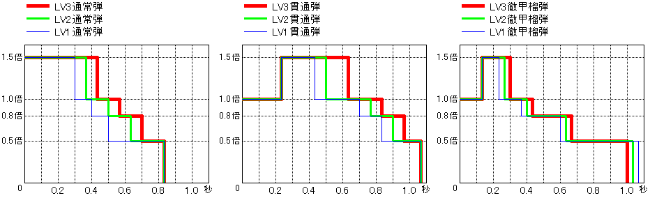

| 무기의 종류 | 배율 |
|---|---|
| 대검/태도 | 4.8 |
| 한손검/쌍검 | 1.4 |
| 해머/수렵피리 | 5.2 |
| 랜스/건랜스 | 2.3 |
| 보우건/활 | 1.2 |
무기 배율은 무기가 본래 가지고 있는 세기를 나타내는 수치로, 공격에 의한 몬스터에게의 데미지 계산의 기본이 됩니다.
현재 상태에 표시되고 있는 공격력은, 이 무기 배율에 일정 배율을 곱한 값이 표시되고 있습니다.
각 무기의 배율은 왼쪽 표와 같습니다.
※현재 상태에 표시되고 있는 공격력을 왼쪽에 기재된 배율로 나누면, 무기 배율을 구할 수 있습니다
식사 효과나 아이템 사용 등에 의한 공격력 업은, 모두 이 무기 배율에 일정 수치가 가산됩니다.
따라서 현재 상태에서는 무기의 종류에 따라 공격력 상승량이 다릅니다.
예: 그레네이드 보우건(무기 배율: 90)의 경우는 90×1.2＝108이 공격력이 된다 108÷1.2＝90
| 통상 | 헤비보우건[압축 리로드] | 헤비보우건[퍼펙트 압축 리로드] | |||||||||||||
|---|---|---|---|---|---|---|---|---|---|---|---|---|---|---|---|
| 탄 이름 | 위력 | 속성 | 히트수 | 소지 개수 | 리로드치 | 반동치 | 보충 | 위력 | 속성 | 기절 | 착탄 | 위력 | 속성 | 기절 | 착탄 |
| LV1 일반탄 | 6 | 1 | ∞ | 5 | 8 | 1.9 | 0.3 | 5 | 3.1 | 0.3 | 10 | ||||
| LV2 일반탄 | 12 | 1 | 99 | 6 | 9 | 4.8 | 0.5 | 20 | 7.3 | 0.5 | 20 | ||||
| LV3 일반탄 | 12 | 도탄 | 99 | 7 | 10 | 4.8 | 0.7 | 10 | 7.2 | 0.7 | 10 | ||||
| LV1 관통탄 | 10 | 3 | 60 | 6 | 10 | 5 | 0.7 | 20 | 7 | 0.7 | 20 | ||||
| LV2 관통탄 | 9 | 4 | 50 | 7 | 10 | 4.5 | 0.7 | 20 | 6.2 | 0.7 | 20 | ||||
| LV3 관통탄 | 7 | 6 | 40 | 8 | 11 | 3.5 | 1.4 | 20 | 4.9 | 1.4 | 20 | ||||
| LV1 산탄 | 5 | 수속성：5 | 3 | 60 | 5 | 10 | 3 | 수속성：2.5 | 0.6 | 5 | 4 | 수속성：3.5 | 0.6 | 5 | |
| LV2 산탄 | 5 | 수속성：4 | 4 | 60 | 6 | 10 | 3 | 수속성：2 | 0.6 | 5 | 4 | 수속성：2.5 | 0.6 | 5 | |
| LV3 산탄 | 5 | 수속성：4 | 5 | 60 | 7 | 11 | 3 | 수속성：2 | 0.6 | 5 | 4 | 수속성：2.5 | 0.6 | 5 | |
| LV1 철갑유탄 | 3 | 착탄 후 폭발：30화속성：40 | 1 | 9 | 7 | 11 | 라이트보우건은 기절치： 5 헤비보우건은 기절치：10 | 2 | 착탄 후 폭발：24화속성：20 | 2.5 | 20 | 2 | 착탄 후 폭발：30화속성：20 | 2.5 | 20 |
| LV2 철갑유탄 | 3 | 착탄 후 폭발：40화속성：60 | 1 | 9 | 8 | 12 | 2 | 착탄 후 폭발：32화속성：30 | 2.5 | 20 | 2 | 착탄 후 폭발：40화속성：30 | 2.5 | 20 | |
| LV3 철갑유탄 | 3 | 착탄 후 폭발：50화속성：80 | 1 | 9 | 9 | 13 | 2 | 착탄 후 폭발：40화속성：40 | 2.5 | 20 | 2 | 착탄 후 폭발：50화속성：40 | 2.5 | 20 | |
| LV1 확산탄 | 6 | 착탄 후 폭발：32화속성：2×3 | 1 | 3 | 8 | 13 | - | - | - | - | - | - | - | - | |
| LV2 확산탄 | 6 | 착탄 후 폭발：32화속성：2×4 | 1 | 3 | 9 | 14 | - | - | - | - | - | - | - | - | |
| LV3 확산탄 | 6 | 착탄 후 폭발：32화속성：2×5 | 1 | 3 | 10 | 14 | - | - | - | - | - | - | - | - | |
| 화염탄 | 1 | 화속성 라이트보우건：무기 배율×0.4 헤비보우건：무기 배율×0.5 | 1 | 60 | 6 | 10 | 0.5 | 무기 배율×0.3 | 2 | 20 | 0.8 | 무기 배율×0.4 | 2 | 20 | |
| 수냉탄 | 1 | 수속성 라이트보우건：무기 배율×0.2 헤비보우건：무기 배율×0.25 | 3 | 60 | 6 | 10 | 0.5 | 무기 배율×0.15 | 1.7 | 20 | 0.8 | 무기 배율×0.2 | 1.7 | 20 | |
| 전격탄 | 1 | 뇌속성 라이트보우건：무기 배율×0.2 헤비보우건：무기 배율×0.27 | 3 | 60 | 6 | 10 | 0.5 | 무기 배율×0.17 | 1.7 | 20 | 0.8 | 무기 배율×0.215 | 1.7 | 20 | |
| 빙결탄 | 1 | 빙속성 라이트보우건：무기 배율×0.2 헤비보우건：무기 배율×0.25 | 3 | 60 | 6 | 10 | 0.5 | 무기 배율×0.15 | 1.7 | 20 | 0.8 | 무기 배율×0.2 | 1.7 | 20 | |
| 멸룡탄 | 1 | 용속성 라이트보우건：75 헤비보우건：90 | 6 | 20 | 9 | 13 | 0.5 | 72 | 10 | 20 | 0.5 | 90 | 10 | 20 | |
| LV1 회복탄 | 0 | - | 12 | 7 | 11 | 회복량：30 | 0 | - | - | 0 | - | - | |||
| LV2 회복탄 | 0 | - | 12 | 9 | 13 | 회복량：50 | 0 | - | - | 0 | - | - | |||
| LV1 독탄 | 10 | 독 축적량：25 | 1 | 12 | 7 | 11 | 6 | 독축적량：20 | 2.5 | - | 8 | 독 축적량：25 | 2.5 | - | |
| LV2 독탄 | 15 | 독 축적량：50 | 1 | 8 | 9 | 13 | 9 | 독축적량：40 | 2.5 | - | 11 | 독 축적량：50 | 2.5 | - | |
| LV1 마비탄 | 10 | 마비 축적량：25 | 1 | 12 | 7 | 11 | 6 | 마비축적량：20 | 2.5 | - | 8 | 마비 축적량：25 | 2.5 | - | |
| LV2 마비탄 | 15 | 마비 축적량：50 | 1 | 8 | 9 | 13 | 9 | 마비축적량：40 | 2.5 | - | 11 | 마비 축적량：50 | 2.5 | - | |
| LV1 수면탄 | 0 | 수면 축적량：25 | 1 | 12 | 7 | 11 | 0 | 수면축적량：20 | 2.5 | - | 0 | 수면 축적량：25 | 2.5 | - | |
| LV2 수면탄 | 0 | 수면 축적량：50 | 1 | 8 | 9 | 13 | 0 | 수면축적량：40 | 2.5 | - | 0 | 수면 축적량：50 | 2.5 | - | |
| 포획용 마취탄 | 0 | 마취 축적량: 80 | 1 | 8 | 8 | 11 | - | - | - | - | - | - | - | - | |
| 페인트탄 | 0 | 1 | 99 | 7 | 11 | 페인트효과 | - | - | - | - | - | - | - | - | |
| 귀인탄 | 0 | - | 5 | 7 | 11 | 무기 배율＋3 | - | - | - | - | - | - | - | - | |
| 경화탄 | 0 | - | 5 | 7 | 11 | 방어력＋6 | - | - | - | - | - | - | - | - | |
| 배열탄 | - | 변경 불가22＋화10 | - | ∞ | 10 | 15 | 장전 속도 반동경감 은 무효 | - | - | - | - | - | - | - | - |
| 강산탄 | 1 | 1 | 5 | 12 | 15 | 참타탄-10 | - | - | - | - | - | - | - | - | |
| 빙산탄 | 1 | 1 | 5 | 12 | 15 | 빙-10 | - | - | - | - | - | - | - | - | |
| 용산탄 | 1 | 1 | 5 | 12 | 15 | 용-10 | - | - | - | - | - | - | - | - | |
| 폭격탄[초기] | 0 | 변경 불가(30＋LV/2)+ (15+LV/4)×15 | - | 5 | 12 | 30 | 1초1히트 | - | - | - | - | - | - | - | - |
| 폭격탄[파생 후] | 0 | 변경 불가(36＋LV/2)+ (18+LV/4)×15 | - | 5 | 12 | 30 | 1초1히트 | - | - | - | - | - | - | - | - |
| 용폭격탄 | 0 | 변경 불가20용(60+LV)+ 용(120+LV/4)×15 | - | 5 | 12 | 30 | 〃 | - | - | - | - | - | - | - | - |
보우건의 경우, 탄에 따라 위력이 다릅니다.
무기 배율에, 탄의 위력을 %로 곱한 것이, 기본위력이 됩니다.
철갑유탄은 착탄 후에 폭발, 확산탄은 자탄이 흩어집니다.
착탄 후에 일어나는 폭발은 변경 불가 데미지로 육질에 의해 경감되지 않지만, 화속성 부분은 육질로 경감됩니다.
회복탄이 몬스터에 맞아도 회복은 하지 않습니다. (데미지 1이 들어갑니다)
헤비보우건..의 압축 리로드에 의한 위력 등은 장전한 탄수에 따라 달라집니다
※착탄 데미지는 무속성으로 변경 불가입니다만, 철갑유탄의 착탄 후의 폭파 데미지는 탄수에 따라 달라진다
예: 그레네이드 보우건에서 LV2 일반탄을 쐈을 경우 90×12%＝10.8＝10이 기본위력이 된다
| 리로드 속도치 | 모션 |
|---|---|
| ４ 이하 | 빠름 （62） |
| ５ ～ ７ | 보통 （78） |
| ８ 이상 | 느림 （103） |
보우건에 탄을 리로드하는 속도는, 다음 계산식의 결과에 따라, 왼쪽 표에서 나타내는 것처럼 3단계로 나뉩니다.
리로드 속도치 ＝ 탄의리로드치 － （보우건의 리로드 수정치 ＋ 장전속도 스킬에 의한 수정치
모션란의 () 안의 수치는, 리로드에 필요한 프레임 수입니다. (30프레임=1초)
| 리로드 | 수정치 |
|---|---|
| 느림 | 0 |
| 조금 느림 | 1 |
| 보통 | 2 |
| 조금 빠름 | 3 |
| 빠름 | 4 |
| 스킬 | 수정치 |
|---|---|
| 장전속도-1 | -1 |
| 스킬없음 | 0 |
| 장전속도+1 | 1 |
| 장전속도+2 | 2 |
| 장전속도+3 | 3 |
| 발사반동치 | 모션 |
|---|---|
| ０ ～ ８ | 반동소 （26） |
| ９ ～ １０ | 반동중 （56） |
| １１ ～ １４ | 반동대 （72） |
탄을 발사했을 때 생기는 반동은, 다음 계산식의 결과에 따라, 왼쪽 표에서 나타내는 것처럼 3단계로 나뉩니다.
반동치 ＝ 탄의 반동치 － （보우건의 반동 수정치 ＋ 반동경감 스킬에 의한 수정치）
모션란의 () 안의 수치는, 반동이 가라앉을 때까지 필요한 프레임 수입니다. (30프레임=1초)
또한, 연사스킬이 발동하고 있는 경우, 두 수정치는 0이 되어, 탄의 반동치가 그대로 발사반동치가 됩니다.
따라서, 대부분의 탄은 스킬이 없는 경우에는 반동이 커지고 맙니다.
| 반동 | 수정치 |
|---|---|
| 최대 | 0 |
| 약간 대 | 1 |
| 중 | 2 |
| 중간 | 3 |
| 스킬 | 수정치 |
|---|---|
| 스킬없음 | 0 |
| 반동경감+1 | 2 |
| 반동경감+2 | 4 |
| 탄 이름 | 탄의 리로드치 | 보우건의 리로드 수정치＋장전속도 스킬에 의한 수정치 | 탄의 반동치 | 보우건의 반동 수정치＋반동경감스킬에 의한 수정치 | |||||||||||||
|---|---|---|---|---|---|---|---|---|---|---|---|---|---|---|---|---|---|
| -1 | 0 | 1 | 2 | 3 | 4 | 5 | 6 | 0 | 1 | 2 | 3 | 4 | 5 | 6 | |||
| LV1 일반탄 | 5 | 보통 | 빠름 | 8 | 소 | ||||||||||||
| LV2 일반탄 | 6 | 보통 | 빠름 | 9 | 중 | 소 | |||||||||||
| LV3 일반탄 | 7 | 느림 | 보통 | 빠름 | 10 | 중 | 소 | ||||||||||
| LV1 관통탄 | 6 | 보통 | 빠름 | 10 | 중 | 소 | |||||||||||
| LV2 관통탄 | 7 | 느림 | 보통 | 빠름 | 10 | 중 | 소 | ||||||||||
| LV3 관통탄 | 8 | 느림 | 보통 | 빠름 | 11 | 대 | 중 | 소 | |||||||||
| LV1 산탄 | 5 | 보통 | 빠름 | 10 | 중 | 소 | |||||||||||
| LV2 산탄 | 6 | 보통 | 빠름 | 10 | 중 | 소 | |||||||||||
| LV3 산탄 | 7 | 느림 | 보통 | 빠름 | 11 | 대 | 중 | 소 | |||||||||
| LV1 철갑유탄 | 7 | 느림 | 보통 | 빠름 | 11 | 대 | 중 | 소 | |||||||||
| LV2 철갑유탄 | 8 | 느림 | 보통 | 빠름 | 12 | 대 | 중 | 소 | |||||||||
| LV3 철갑유탄 | 9 | 느림 | 보통 | 빠름 | 13 | 대 | 중 | 소 | |||||||||
| LV1 확산탄 | 8 | 느림 | 보통 | 빠름 | 13 | 대 | 중 | 소 | |||||||||
| LV2 확산탄 | 9 | 느림 | 보통 | 빠름 | 14 | 대 | 중 | 소 | |||||||||
| LV3 확산탄 | 10 | 느림 | 보통 | 빠름 | 14 | 대 | 중 | 소 | |||||||||
| 화염탄 | 6 | 보통 | 빠름 | 10 | 중 | 소 | |||||||||||
| 수냉탄 | 6 | 보통 | 빠름 | 10 | 중 | 소 | |||||||||||
| 전격탄 | 6 | 보통 | 빠름 | 10 | 중 | 소 | |||||||||||
| 빙결탄 | 6 | 보통 | 빠름 | 10 | 중 | 소 | |||||||||||
| 멸룡탄 | 9 | 느림 | 보통 | 빠름 | 13 | 대 | 중 | 소 | |||||||||
| LV1 회복탄 | 7 | 느림 | 보통 | 빠름 | 11 | 대 | 중 | 소 | |||||||||
| LV2 회복탄 | 9 | 느림 | 보통 | 빠름 | 13 | 대 | 중 | 소 | |||||||||
| LV1 독탄 | 7 | 느림 | 보통 | 빠름 | 11 | 대 | 중 | 소 | |||||||||
| LV2 독탄 | 9 | 느림 | 보통 | 빠름 | 13 | 대 | 중 | 소 | |||||||||
| LV1 마비탄 | 7 | 느림 | 보통 | 빠름 | 11 | 대 | 중 | 소 | |||||||||
| LV2 마비탄 | 9 | 느림 | 보통 | 빠름 | 13 | 대 | 중 | 소 | |||||||||
| LV1 수면탄 | 7 | 느림 | 보통 | 빠름 | 11 | 대 | 중 | 소 | |||||||||
| LV2 수면탄 | 9 | 느림 | 보통 | 빠름 | 13 | 대 | 중 | 소 | |||||||||
| 포획용 마취탄 | 8 | 느림 | 보통 | 빠름 | 11 | 대 | 중 | 소 | |||||||||
| 페인트탄 | 7 | 느림 | 보통 | 빠름 | 11 | 대 | 중 | 소 | |||||||||
| 귀인탄 | 7 | 느림 | 보통 | 빠름 | 11 | 대 | 중 | 소 | |||||||||
| 경화탄 | 7 | 느림 | 보통 | 빠름 | 11 | 대 | 중 | 소 | |||||||||
일반탄·관통탄·철갑유탄의 3종은, 발사 후의 비거리에 따라 기본위력이 변화합니다.
일반탄은, 발사 후 1.5배 ⇒ 1.0배 ⇒ 0.8배 ⇒ 0.5배 로 변화
관통탄과 철갑유탄은, 발사 후 1.0배 ⇒ 1.5배 ⇒ 1.0배 ⇒ 0.8배 ⇒ 0.5배 로 변화
※헤비보우건..의 경우 1.5배가 아니라 1.7배
아래 그래프는, 시간 경과에 따른 위력의 변화를 나타낸 것입니다. 보우건이나 가공 레벨 등에 따라
탄의 속도에는 차이가 있으므로, 아래 그래프는 탄의 속도에 따라 보정이 걸립니다.
탄의 속도가 빠를수록 그래프가 가로 방향으로 압축되고, 느릴수록 늘어나는 식입니다.
참고로, 헤비보우건..은 라이트보우건보다 탄의 속도가 빠른 것이 많습니다.
보정에 따라, 시간적으로 봤을 경우는, 탄의 속도가 빠를수록 고위력을 발휘하는 시간대가 짧아집니다만,
거리적으로 봤을 경우는, 어떤 보우건이나 어떤 가공 레벨이라도, 고위력을 발휘하는 거리는 거의 같아집니다.
따라서, 그 거리만 파악해두면, 어떤 보우건이라도 같은 거리에서 고위력을 발휘시킬 수 있습니다.
위 3종류의 탄 이외는, 비행거리에 따라 기본위력이 변화하는 일은 없습니다.
산탄은 비행거리에 따라 위력이 변하는 일은 없습니다만, 히트수가 변화합니다.
각종 속성탄도, 비행거리에 따라 속성값이 변화하는 일은 없습니다.

| 스킬 | 효과 |
|---|---|
| 일반탄공격력상승 | 일반탄의위력가 1.1배 |
| 관통탄공격력상승 | 관통탄의위력가 1.1배 |
| 산탄공격력상승 | 산탄의위력가 1.3배 |
| 노려쏘기 | 특정 조건에서, 탄육질+5 |
| ○속성 공격력 강화 | 각 속성탄의 위력 업 |
| 상태이상공격 강화 | 상태이상탄의속성값가 1.125배 |
왼쪽 표에서 나타내는 스킬이 발동하고 있으면, 탄의 위력이나 속성값이 증가합니다.
회심률이란, 공격했을 때 크리티컬 히트가 발생할 확률입니다.
크리티컬 히트 시, 회심률이 0%보다 큰 경우는 기본위력이 1.25배, 마이너스 수치인 경우는 기본위력이 0.75배가 됩니다.
보우건의 히트 이펙트는, 발사 후 위력 변화에 따라 다릅니다.
이펙트는 1.5배 ⇒ 1.0배 ⇒ 0.8배 ⇒ 0.5배 순으로 작은 이펙트가 됩니다.
※헤비보우건..의 경우 1.5배가 아니라 1.7배
(주는 데미지에는 영향받지 않지만, 데미지가 거의 통하지 않는 부위에서도 큰 이펙트가 나오는 경우도 있습니다)
| 상태 | 배율 |
|---|---|
| 마비상태중 | 1.1배 |
| 바위로 의태 중 （바살모스） | 1.1배 |
| 구멍 함정 （떨어진 후 발버둥치기 시작할 때까지만） | 1.1배 |
| 수면 중 （첫 타격만） | 3.0배 |
몬스터가 특정 상태일 때 공격하면, 왼쪽 표처럼 주는 대미지가 증가합니다.
(증가하는 것은 무속성 대미지뿐이며, 속성 대미지는 변화하지 않습니다)
마비 함정에 걸려 있을 때는 마비 상태가 아니라 저림 상태이므로 증가하지 않습니다.
미발각 상태에서 함정에 빠뜨리면, 효과 시간이 약 1.7배로 늘어납니다. 또한, 분노 시에는 약 0.7배가 됩니다. (미발각이 우선)
(라잔은, 재워서 떨어뜨려도 6초 그대로)
몬스터가 약해져 자고 있는 경우도 수면 중과 동일. 단, 몬스터의 체력은 서서히 회복하고 있다.
(에스피나스의 퀘스트 개시 시 상태는 제외)
몬스터에는 육질이 설정되어 있어, 대미지를 경감시킵니다.
통상 대미지, 속성 대미지 각각이 육질에 의해 경감됩니다.
또한, 몬스터에게는 육질과는 별도로 전체 방어율이 설정되어 있어, 총 데미지 수치를 경감시켜 버립니다.
게다가 분노 상태가 되면 전체방어율에 보정이 걸리는 몬스터도 있습니다.
예: 그레네이드 보우건으로 리오레이아(전체방어율: 0.9)의 머리에 일반탄LV2를 크리티컬 거리에서 맞췄을 경우
90×6%×1.5×50%＝4.05＝4
4×90%＝3.6＝3 데미지
플레이어의 공격력을 올리는 수단은 여러 가지 있습니다만, 크게 나누어 3개의 그룹으로 나뉩니다.
1: 공격력 업 스킬 발동, 공격력을 올리는 아이템 소지 (힘의 부적·힘의 발톱)
2: 식사 효과에 의한 상승, 귀인약·귀인약 그레이트 사용
3: 괴력의 씨·괴력의 환약·귀인 피리 사용
그룹1은, 퀘스트 중에 힘이 다해도 효력이 사라지지 않습니다.
그룹2는, 퀘스트 중에는 계속 유효하지만, 힘이 다하면 효력이 사라집니다.
그룹3은, 일정 시간이 지나면 효력이 사라집니다.
그룹 2와 3은 그룹 내 각 효과가 중복되지 않습니다. 중복된 경우에는 순서에 관계없이 효과가 큰 쪽이 우선됩니다.